MWeb for Mac 帮助
Markdown 语法和 MWeb 写作使用说明
如果您不知道 Markdown，请先阅读 Markdown 語法官方說明繁體中文版 这篇文章。
如果您已经知道 Markdown，请直接阅读 Markdown 语法和 MWeb 写作使用说明。也可以在 MWeb 的帮助菜单 - Markdown 语法 中随时查看。
MWeb 外部模式主界面说明
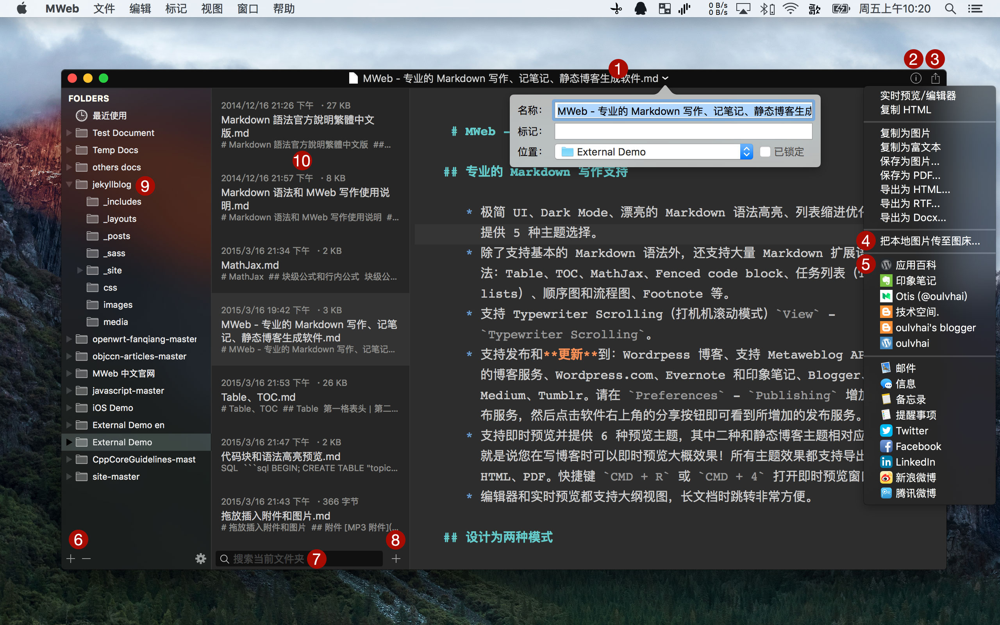用菜单 视图 - 打开外部模式 或 CMD + E 即可打开外部模式
1 处显示的是文件名，点击后可以修改文件名、增加标记。
2 处为显示字数和文档大纲视图的按钮，快捷键：CMD + 8。
3 处点击后如图，为预览、导出、图床、发布、分享功能的入口，非常重要和常用的按钮，快捷键：CMD + 9。
4 处点击后会显示图床上传界面。
5 处为发布到 Wordpress、Evernote、Medium 等功能，在偏好设置 - 发布服务中增加的发布服务会显示在这里。
6 处为增加引入的文件夹按钮，也可以直接把文件夹拖拽到左边的文件夹列表中来增加。
7 处可以搜索当前文件夹中的文档，支持全文搜索。
8 处为在当前文件夹中新建文档的按钮，也可以用快捷键：CMD + Shift + N。
2 处字数和文档大纲点击后
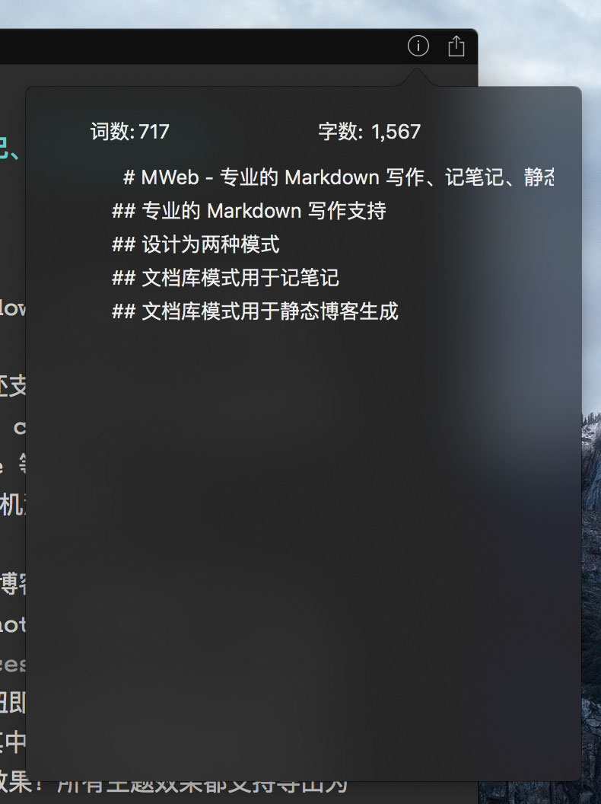9 处右键菜单功能
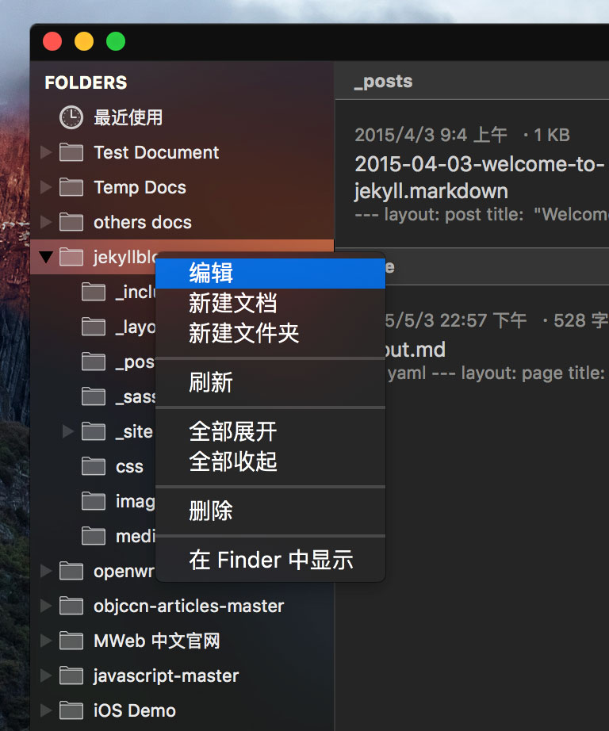9 处点编辑后的引入文件夹的设置
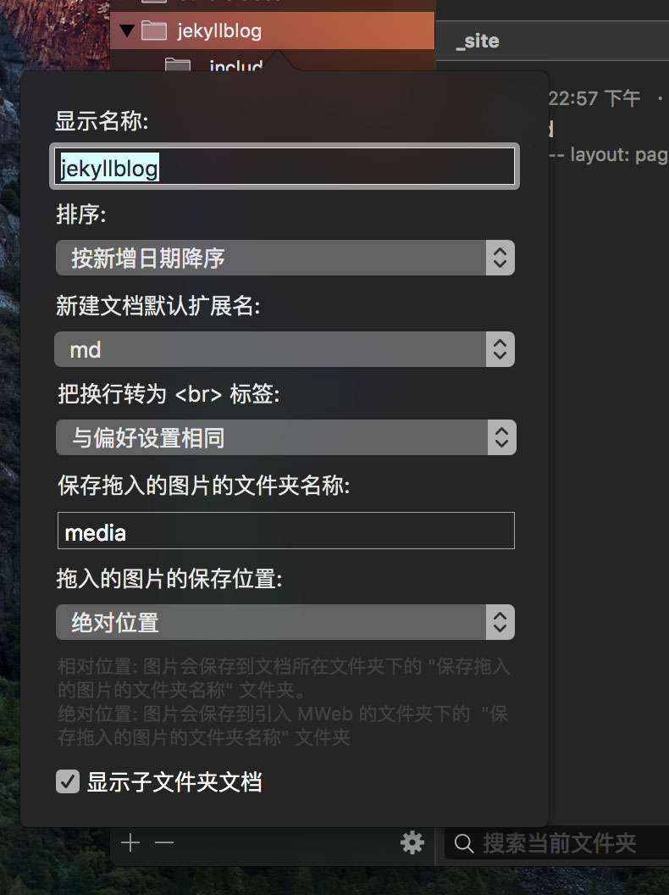10 处右键菜单功能
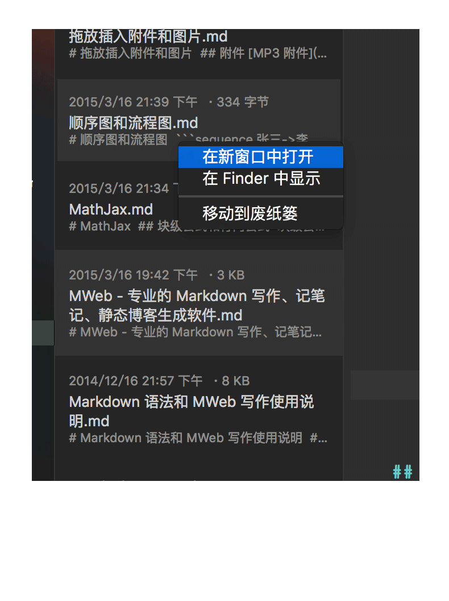关于外部模式，需要更详细信息请参考：
发布服务和图床服务说明
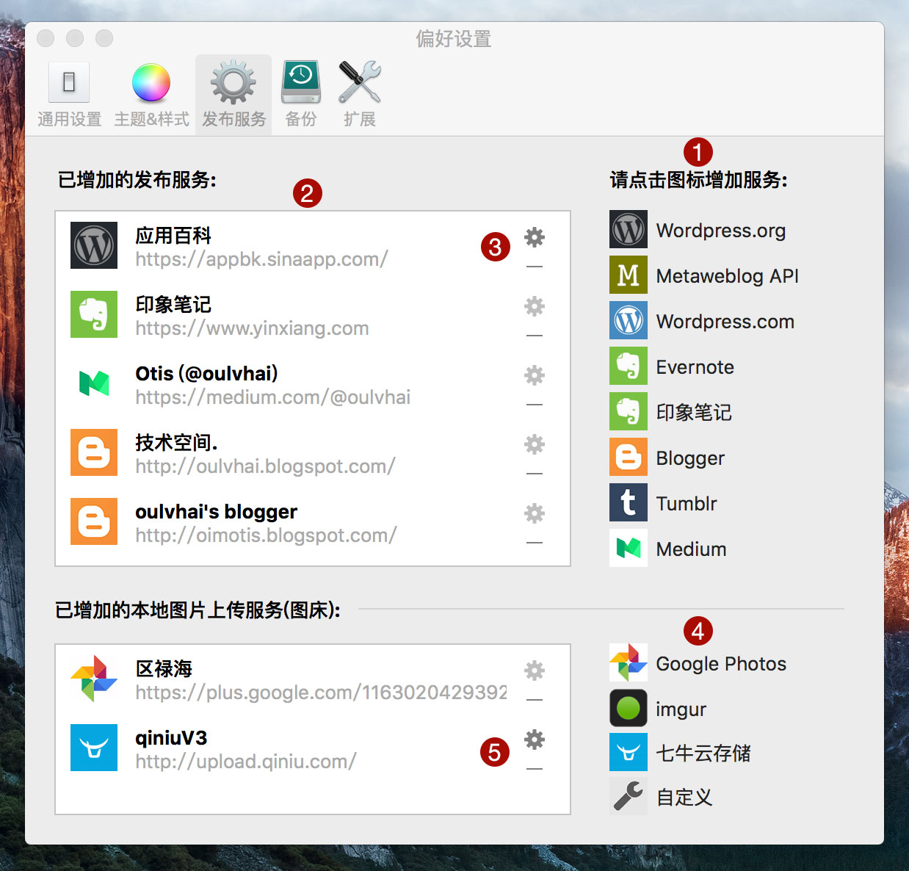1 处是已支持的发布服务列表，点击后即可增加所需要的发布服务。
2 处为已增加的发布服务列表，可以用拖动来调整顺序。
3 处为编辑和删除发布服务的按钮。
4 处是已支持的图床服务列表，点击后即可增加。
5 处为已增加的图床服务，也可以编辑和删除已增加的图床服务。
小技巧：发布到 Wordpress、Blogger 等支持增加 阅读更多，菜单：标记 - 插入阅读更多注释 即可插入，如下图，注意前后要空两行，因为这是一个 HTML 标记。后面的静态博客的阅读更多也是这样增加的。
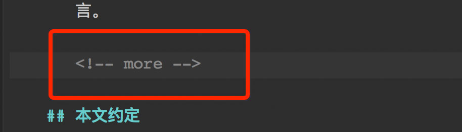
图床服务的图片上传窗口说明
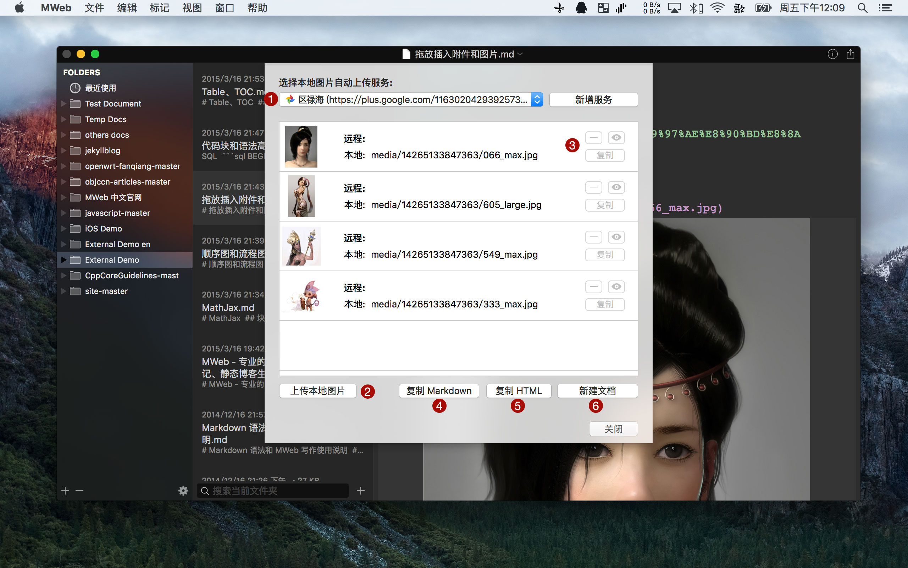1 处为已增加的图床上传服务列表，上传时可以从中选择本地图片所要上传到的服务。
2 处为上传按钮，在 1 处选择好服务后，点击此按钮即可上传本地图片到所选服务。
3 处依次为删除按钮、打开远程图片按钮、复制远程图片地址按钮，当点删除按钮删除远程图片后，可以再点 2 处的上传按钮，重新上传。
4 处点击后会把文档中的本地图片地址替换为远程图片地址并复制。
5 处同 4 处，但是复制的内容为 HTML。
6 处点击后会把文档中的本地图片地址替换为远程图片地址，并以替换后的文档为内容新建文档。
关于图床服务，需要更详细信息请参考：
MWeb 文档库主界面说明
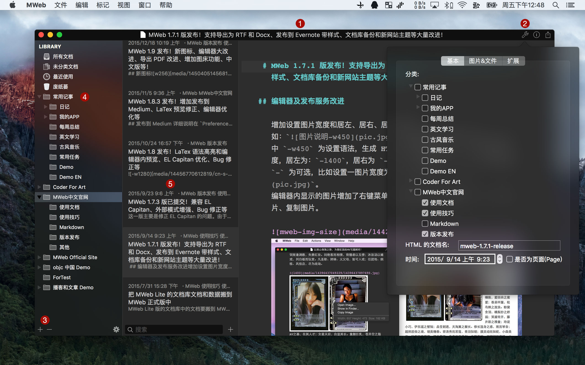用菜单 视图 - 打开文档库 或 CMD + L 即可打开文档库
1 处为标题。
2 处按钮为文档设置，可以设置文档所属的分类，分类是可以选多个的。另外也可以查看和管理文档拖拽进来的图片和附件、设定扩展字段的值。快捷键：CMD + 7。
3 处按钮可以新增分类、子分类。
4 处为分类列表，可以拖拽分类以调整顺序和结构。
5 处为选中分类下的文档列表，当分类排序设置为自定义拖拽排序时才可以拖拽方式排序。
直接拖拽列表中的文档到左边的分类可以移动到该分类，按住 CMD 键再拖动则为增加到该分类，按住 Option 键再拖动则为移除该分类。
说明：文档库模式的界面跟外部模式差不多，以上是不同的部分，另外的都跟外部模式一样。搜索的话，文档库中的搜索是全文搜索整个文档库中的文档的。
4 处右键菜单功能

4 处点编辑后的静态网站设置
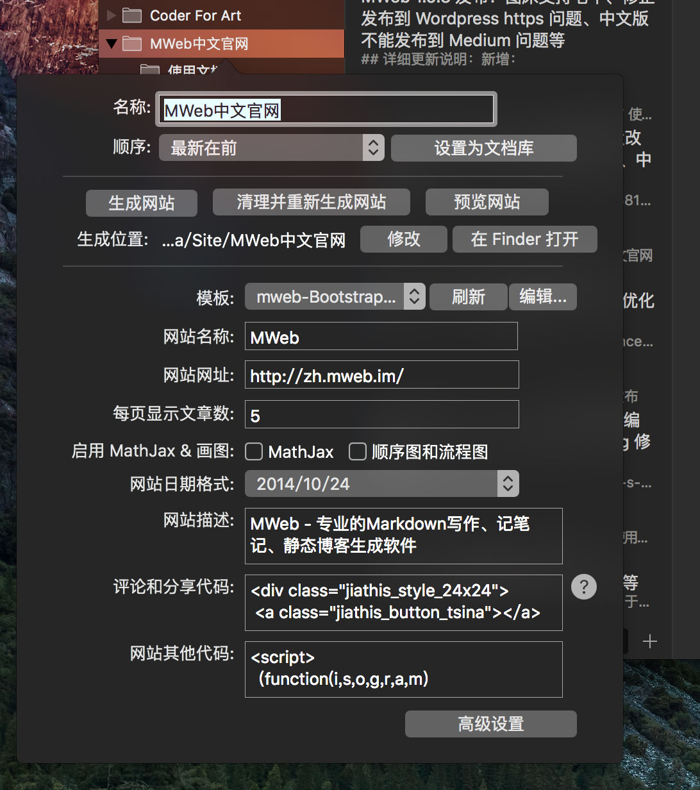5 处右键菜单功能
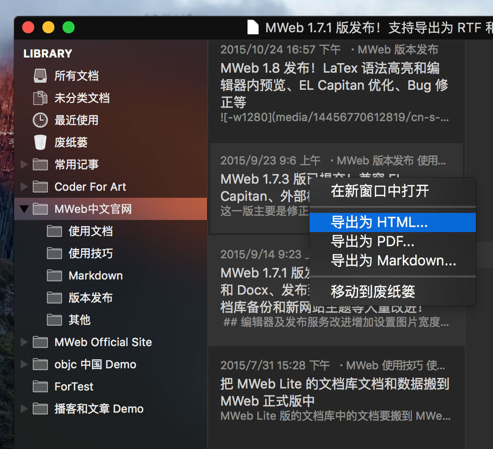关于MWeb 生成静态网站、博客
MWeb 的静态博客生成功能非常简单，大概是步骤是：1. 把分类设置为网站分类，设置好网站所用的主题等信息。2. 把写好的文章归类到该网站分类中。 3. 右键该分类，选择 生成并预览网站。通常你只需要看看 MWeb 生成静态博客详细说明 即可。
如果您想增加分享和评论，请阅读：给MWeb生成的静态博客增加分享和评论 (非 mweb-medium-like 主题才看)
MWeb 自带的网站主题肯定不能满足所有人的需求，如果您要制作自己的主题，请阅读：自定网站或博客主题简单说明
MWeb 的静态博客增强功能，请阅读：MWeb 1.4 新功能介绍二：静态博客功能增强
MWeb 所有的主题都放到 github 上了：https://github.com/oulvhai/MWeb-Themes，这其中：
- mweb-Bootstrap-blog-EN 这个主题是 MWeb 英文官网 http://www.mweb.im/ 在用，也是放在github pages上。
- mweb-Bootstrap-blog 主题是 MWeb 中文官网 http://zh.mweb.im/ 在用，目前放在 gitcafe pages 上。
- 新增： mweb-medium-like 主题，放在 https://github.com/oulvhai/mweb-medium-like 这个位置，目前我的博客在用：http://coderforart.com。这个主题的详细说明：MWeb mweb-medium-like 网站主题
- 新增：mweb-foundation-book 主题，放在 https://github.com/oulvhai/mweb-foundation-book 这个位置，Demo 网址：http://coderforart.com/objccndemo/
网站、博客生成后，要发布和更新到网站服务器，请阅读以下两篇文章：
个人体验：使用 GoodSync 同步是最简单方便的，然后是使用 git 发布到 github、gitcafe 这类免费的博客服务提供商。而使用一般的 FTP 工具则比较麻烦，适用于更新比较少的情况。
MWeb 视图模式切换和一些比较常用的选项说明
- 如果你比较喜欢用外部模式，可以在 偏好设置 - 普通设置里勾选：启动时默认打开外部模式
- MWeb 使用视图菜单和快捷键来切换二栏、三栏、编辑器&预览视图。详细请看视图菜单，菜单上有标记快捷键。具体是
CMD + 1/2/3/4这四个快捷键，比如说你喜欢在三栏和编辑器&预览视图中切换，只要用CMD + 4就可以来回切换了。同样，CMD + 3是切换三栏和仅编辑器模式。 - MWeb 中有两个比较重要的选项确定了预览视图是另外窗口还是在编辑器内打开，更详细请参考：这个网址。
- 使用 视图菜单 - 黑暗模式 可以切换到黑色主题。
- 如果有任何问题或建议，可以用以下任何一种方法联系我：
- 在 MWeb 中点：帮助 --> 发送建议 写信给我
- 发邮件给我：coderforart+233@gmail.com
- 在微博上私信我：@oulvhai
- Twitter：@oulvhai